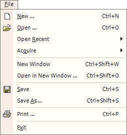
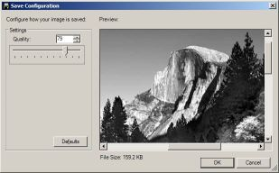

Save / Save As Operation

The Save Operation (File-->Save or Disk Icon in toolbar) allows the user to save an image. Use this option to quickly save the any changes.The Save As Operation (File-->Save As) is used when saving a new image or when saving the current image to with different name.

If you save an image as a JPEG, you will be presented with a dialog allowing you to set the quality of the JPEG. It will also show you a preview of what the saved image will look like with that quality setting, and the resultant file size. Lower quality settings result in smaller file sizes.